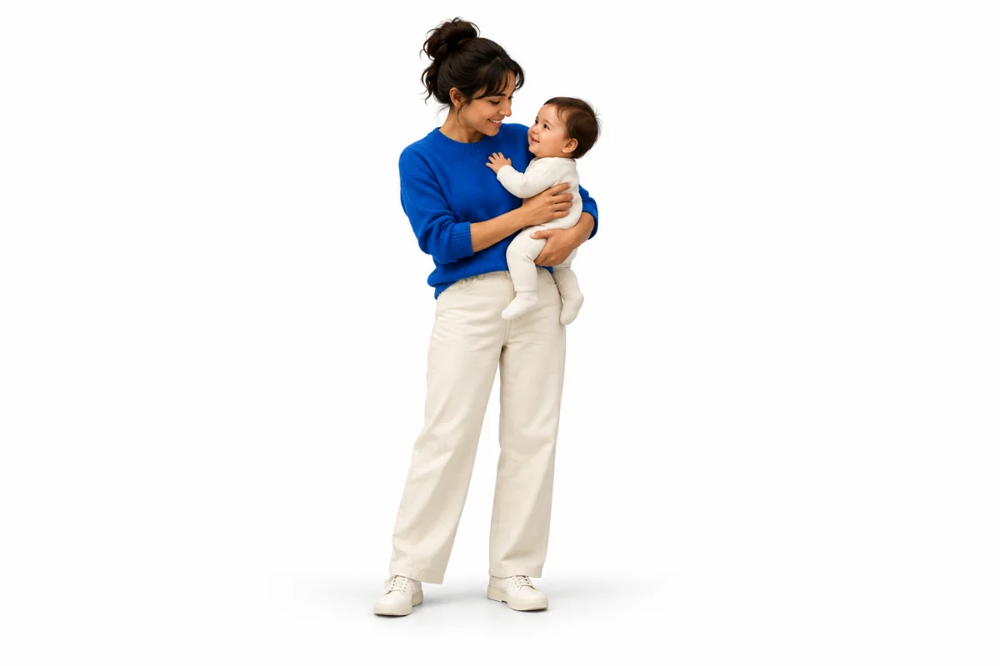
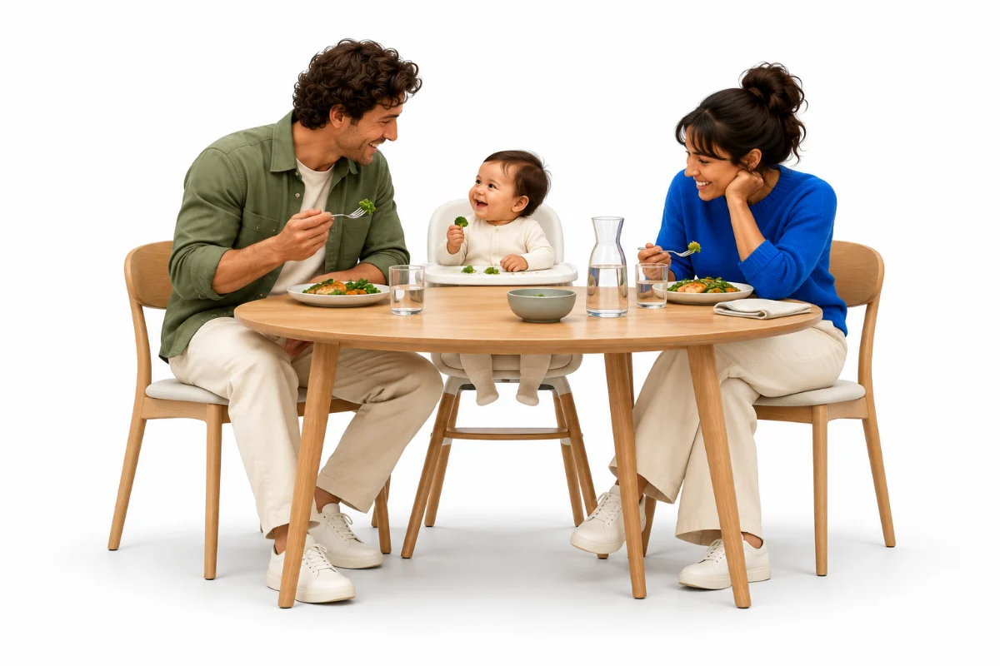
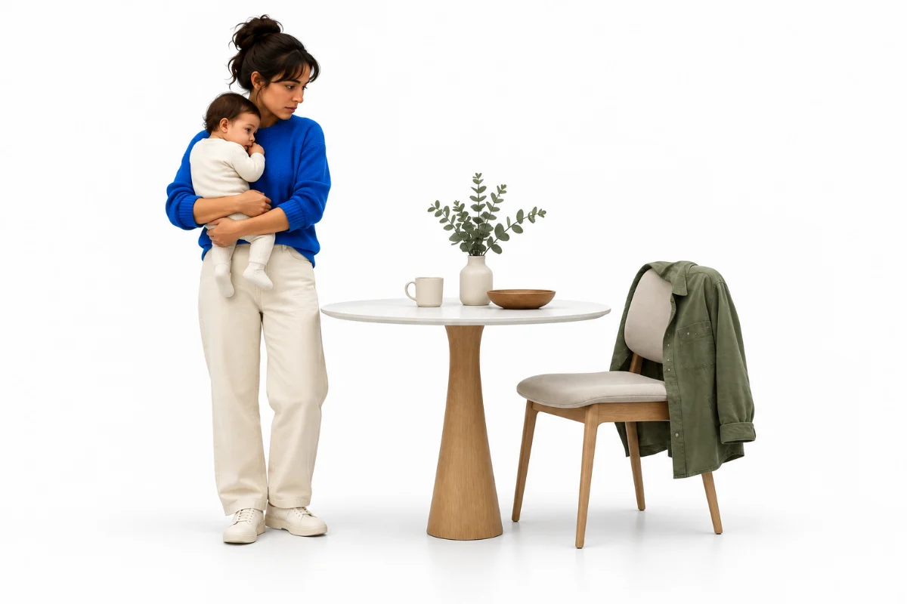
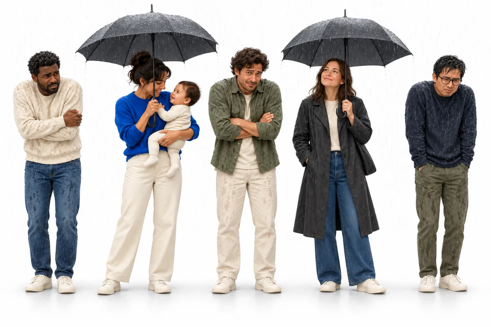
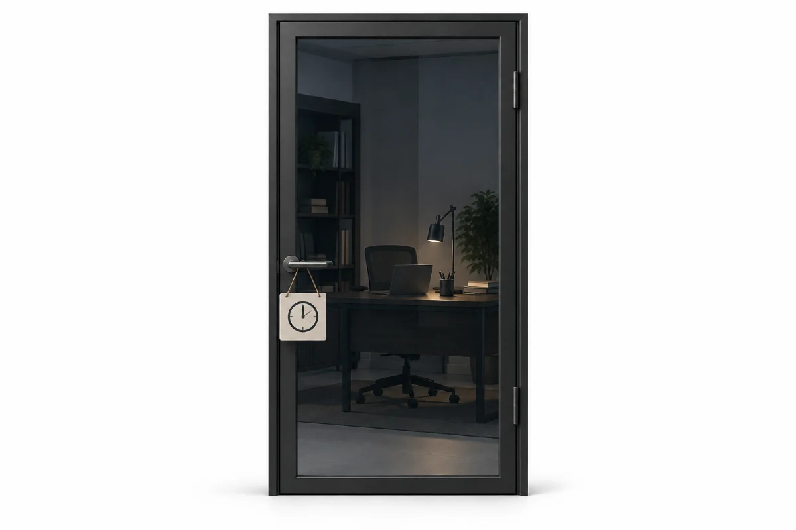
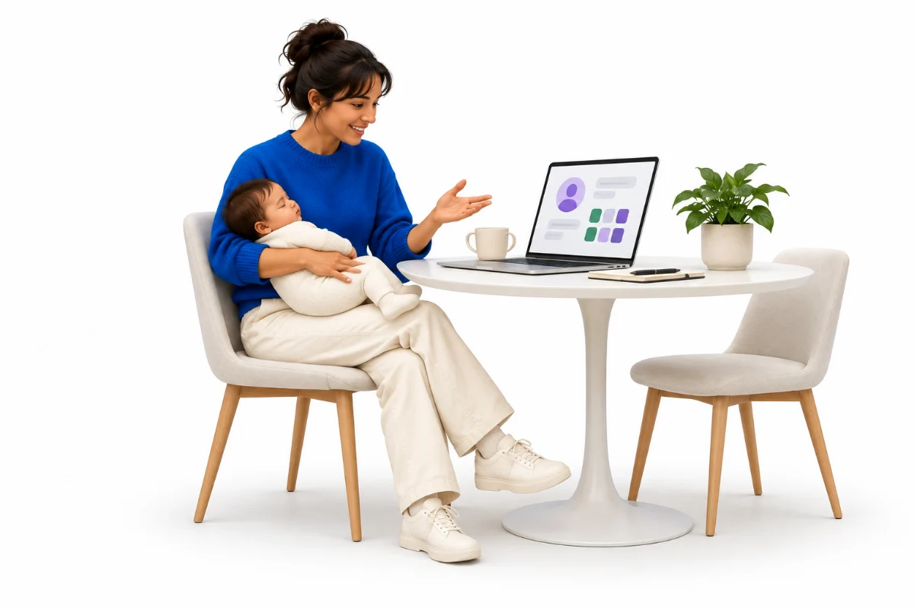
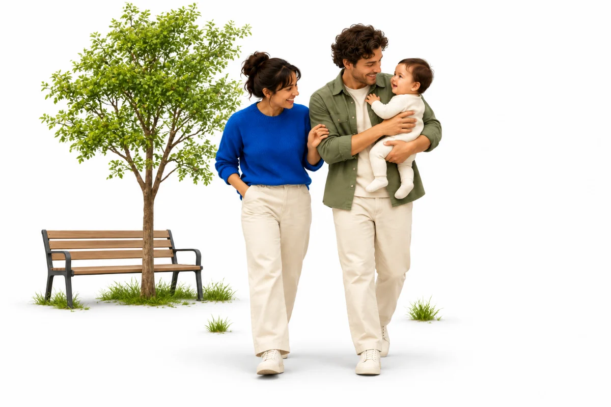
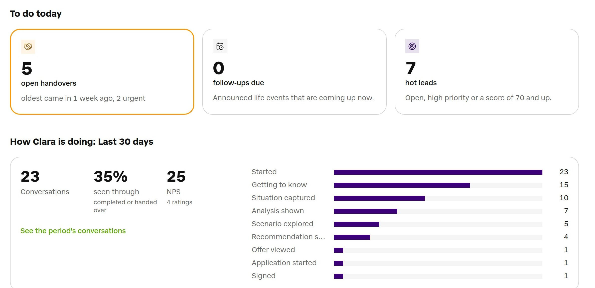
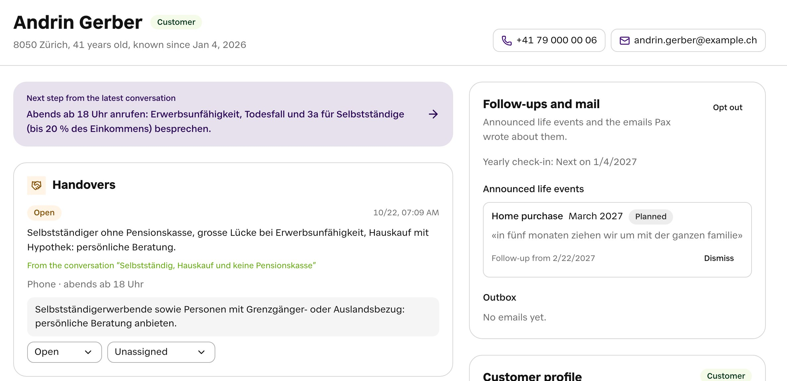

Meet Clara.
One evening, Jane asks Clara what would happen if something happened to May. In Swiss German.


He earns the family’s income. Jane is at home with their five-month-old.

The state and his pension fund pay part. CHF 1’239 is missing. Every month.

6 in 10have no life insurance
8 in 10have no cover if their health stops them working
3 in 4think the state disability insurance has them covered
Generali survey of 1’016 people in Switzerland, May 2025.

Most people who are covered asked an advisor first. Today that takes an appointment.
Generali survey, May 2025.
Understand what the customer needs. Check the facts against the products. Then make it visual, so the customer understands.
Franz Laim, insurance advisor
One evening, Jane asks Clara what would happen if something happened to May. In Swiss German.

But we can stop it from breaking his family.
The Müllers closed their gap in one conversation with Clara.

Today’s handovers, follow-ups and leads, and how far customers get with Clara.
Pax’s rules hand complex cases to an advisor. Customers can ask for one any time.


Let’s make sure the next family is ready.
Pax Clara by Flurin Laim and Joel Müller, Team A4